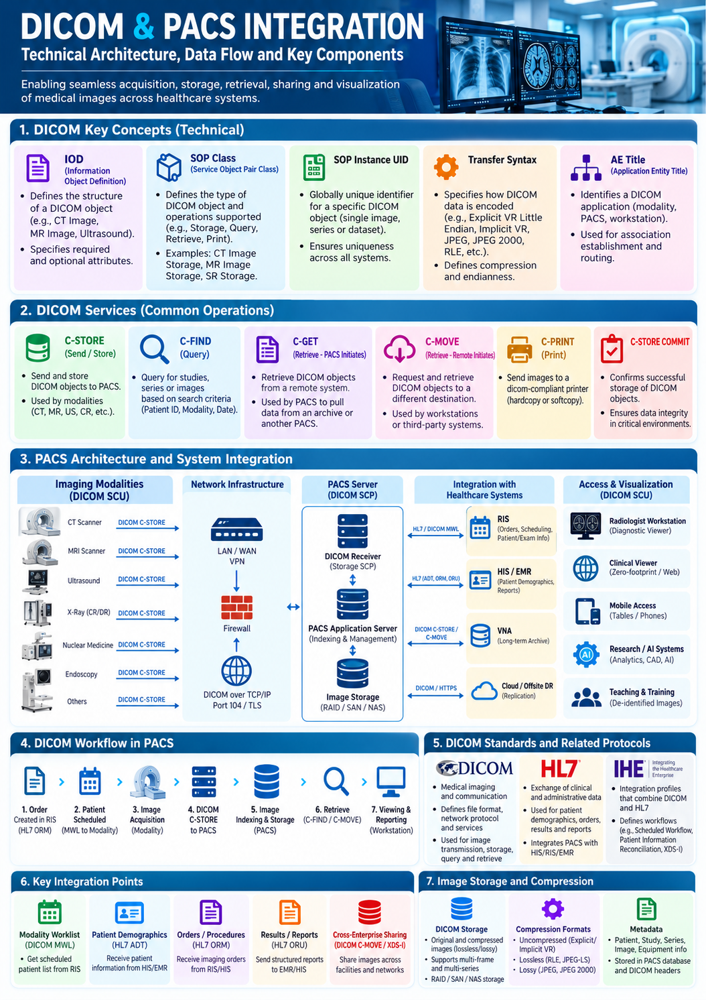

HEALTHCARE IT • DICOM • PACS • INTEGRATION
DICOM & PACS Integration
Technical Architecture • Medical Imaging • Interoperability • Image Data Flow
Technical capabilities for designing, integrating and managing healthcare imaging ecosystems using DICOM, PACS, RIS, HIS/EMR, VNA, diagnostic workstations and modern healthcare integration patterns.

DICOM & PACS integration architecture covering imaging modalities, DICOM services, PACS components, healthcare systems, workflows, protocols, storage and image exchange.
1. DICOM Technical Fundamentals
DICOM (Digital Imaging and Communications in Medicine) defines the standard used to represent, transmit, store, query, retrieve and exchange medical imaging information.
- IOD — Information Object Definition: Defines the structure and attributes of imaging objects such as CT, MR and ultrasound.
- SOP Class: Defines the DICOM object type and supported operations.
- SOP Instance UID: Globally unique identifier for a DICOM object, series or study.
- Transfer Syntax: Defines encoding, byte ordering, value representation and compression.
- AE Title: Identifies a DICOM application entity such as a modality, PACS or workstation.
2. DICOM Services
- C-STORE: Send and store DICOM objects to PACS or DICOM storage.
- C-FIND: Query studies, series or images using search criteria.
- C-GET: Retrieve DICOM objects from a remote application.
- C-MOVE: Request transfer of images to another destination.
- C-PRINT: Send images to compatible DICOM printers.
- C-STORE-COMMITMENT: Confirm successful storage of DICOM objects.
3. PACS Architecture & System Integration
A typical PACS ecosystem connects imaging modalities, network infrastructure, DICOM services, image storage, clinical applications and visualization clients.
- Imaging Modalities: CT, MRI, ultrasound, X-ray, nuclear medicine and other devices.
- Network Infrastructure: LAN/WAN/VPN, firewall controls and secure DICOM communication.
- PACS Server: DICOM receiver, indexing, study management and application services.
- Image Storage: RAID, SAN, NAS and other storage platforms.
- VNA: Vendor-neutral long-term image archive and enterprise image management.
- Access: Diagnostic workstations, web/zero-footprint viewers and mobile access.
4. DICOM Data Flow
Imaging Modality → DICOM C-STORE → PACS → Indexing & Storage → C-FIND / C-MOVE → Diagnostic Viewer
The workflow begins with image acquisition, continues through DICOM transmission and PACS indexing/storage, and ends with authorized query, retrieval and visualization.
5. PACS Integration with Healthcare Systems
- RIS ↔ PACS: Scheduling, modality worklists, imaging orders and exam information.
- HIS/EMR ↔ PACS: Patient demographics, encounters, clinical context and reports.
- VNA ↔ PACS: Long-term image archiving and enterprise retrieval.
- Cloud / Offsite DR: Replication, backup and disaster recovery.
- Diagnostic Viewers: Workstation, web and mobile access to authorized studies.
6. DICOM, HL7 & IHE
DICOM
Provides the imaging communication and object standard for image storage, query, retrieval and exchange.
HL7
Supports clinical and administrative information exchange including patient demographics, orders, scheduling and results, complementing DICOM in imaging workflows.
IHE
Defines practical interoperability profiles that combine standards such as DICOM and HL7 to support consistent cross-vendor healthcare workflows.
7. Modality Worklist Integration
Modality Worklist reduces manual patient and examination data entry by allowing imaging devices to retrieve scheduled procedure information.
RIS / HIS → DICOM Modality Worklist → Imaging Modality → DICOM Study → PACS
8. Image Storage & Data Management
- Online, nearline and long-term image storage
- RAID, SAN and NAS architectures
- Vendor-neutral archive strategies
- Lossless and lossy compression
- Study, series, instance and patient metadata management
- Retention and lifecycle management
- Backup, replication and disaster recovery
9. Security & Network Considerations
- DICOM over TCP/IP and secure transport options
- Network segmentation for clinical systems
- Firewall and port management
- TLS-based secure communication where supported
- AE Title and endpoint configuration
- Authentication, authorization and access control
- Audit logging and monitoring
- Protection of patient and imaging data
10. Integration Engineering Capabilities
- Point-to-point and interface-engine integration
- API and service-based integration around imaging ecosystems
- DICOM routing and rules-based forwarding
- HL7 ADT, ORM and ORU integration
- Data transformation and message validation
- Interface monitoring and exception handling
- Image migration and reconciliation
- Cross-vendor interoperability testing
11. Technical Migration & Interoperability
- Source PACS assessment and imaging inventory
- DICOM connectivity and endpoint validation
- Patient and study reconciliation
- Historical image migration
- Metadata validation
- Duplicate and orphan-study handling
- Migration performance monitoring
- Post-migration image integrity validation
12. Technical Monitoring & Troubleshooting
- Association failures and AE Title configuration issues
- Unsupported SOP Classes or Transfer Syntax incompatibilities
- Network latency and connectivity problems
- Storage capacity and performance issues
- Failed or delayed image transfers
- HL7/DICOM message mismatches
- Patient and study reconciliation errors
13. End-to-End Technical Workflow
- Patient registration and imaging order creation
- Scheduling and Modality Worklist generation
- Patient and procedure selection at the modality
- Image acquisition and DICOM C-STORE transmission
- PACS indexing and image storage
- Clinical query using C-FIND
- Image retrieval using C-GET or C-MOVE
- Diagnostic viewing and reporting
- Long-term archive and governed image access
Technical Capability Summary
DICOM and PACS integration combines DICOM services, PACS architecture, network engineering, HL7 interoperability, IHE workflows, image storage, metadata management, security, migration and operational monitoring. These capabilities provide the technical foundation for reliable, interoperable and scalable medical-imaging ecosystems.